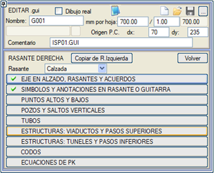
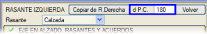
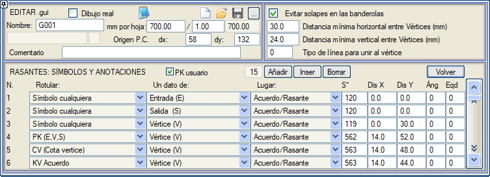
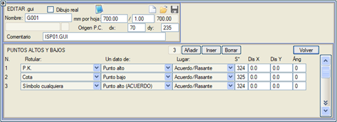
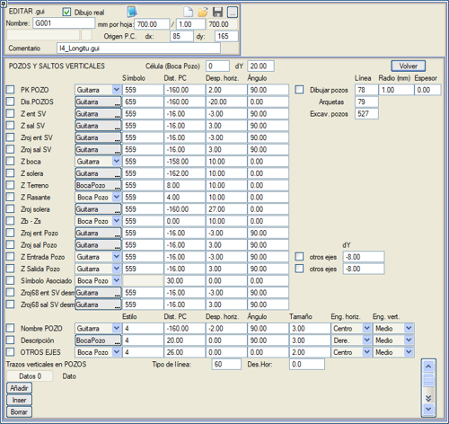
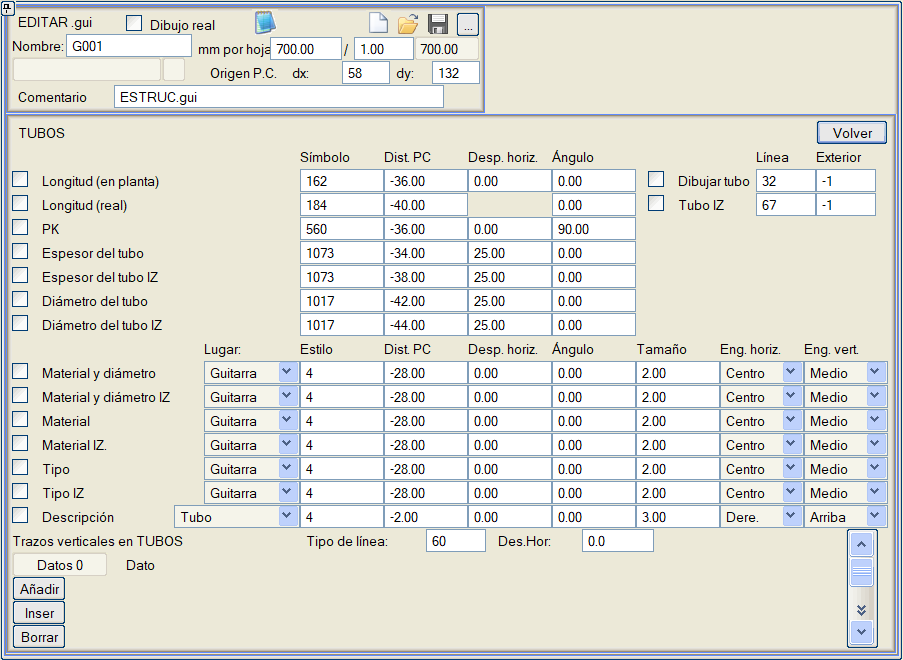
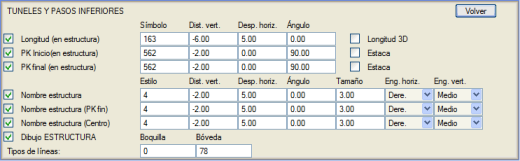
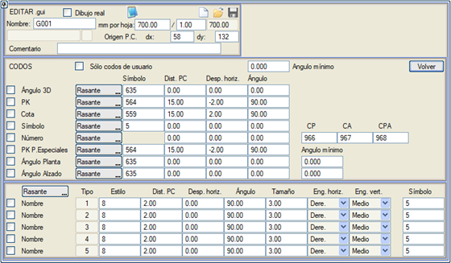

| |
|
BOYKESİT PAFTALARI İÇİN ŞABLONLAR: KIRMIZI KOTLAR
|
Buradan, kırmızı kot (proje kotu) hattının, düşey kurpların, referans dikey çizgilerinin vb. kırmızı kota (sağ veya sol) bağlı grafiksel gösterimi ayarlanır. Menünün üst kısmında, SOL KIRMIZI KOT'ta belirtilen tüm değerleri sağ kırmızı kota kopyalayan [Sol K.Kottan Kopyala] butonu bulunur. SOL KIRMIZI KOT bölümünde de benzer bir buton mevcuttur. Sol kırmızı kot için karşılaştırma düzleminin konumunu ayırmak ve böylece onları ayrı ayrı gösterebilmek mümkündür. DobleRas.gui şablonu bu imkanı kullanır. 
.gui DÜZENLE diyalog kutusu açıkken, koordinat bilgisi (ekranın alt kısmında) bize karşılaştırma düzlemine göre (dX, dY) değerlerini gösterecektir.  Boykesitte Güzergah. Kırmızı Kotlar ve Düşey Kurplar
Kırmızı Kot veya Bilgi Bandındaki Semboller ve Notasyonlar Tepe ve Çukur Noktaları Muayene Bacaları ve Düşey Düşüler Borular Sanat Yapıları: Viyadükler ve Üstgeçitler Sanat Yapıları: Tüneller ve Altgeçitler Dirsekler KM Eşitlikleri Boykesitte Güzergah. Kırmızı Kotlar ve Düşey Kurplar Buradan, kırmızı kot diyagramı için çizgi tipleri ayarlanır.
KARAKTERİSTİK NOKTALARDA DİKEY ÇİZGİLER ile ilgili olarak, boykesitin karakteristik noktalarına (bir düşey kurbun giriş teğeti, some veya çıkış teğeti, ya da boru hatları durumunda olduğu gibi düşey kurp olmayan some noktasının kendisi) göre dikey çizgiler çizmeyi sağlayan parametreler belirtilir. Bu çizgiler şu şekilde çizilebilir:
Kırmızı Kot veya Bilgi Bandındaki Semboller ve Notasyonlar Buradan, kırmızı kotun hangi değerlerinin gösterileceğini tanımlayan çok önemli bir diyalog kutusuna erişilir. 
Etiketleme seçenekleri şunlardır:
Açıkçası, kullanılacak sembol tipi gösterilecek veriye uygun olmalıdır. Etiketlenecek veri tipi seçildikten sonra, bu verinin aşağıdaki olasılıklardan hangisinden (veya hangisinde, duruma göre) gösterilmek istendiği belirtilir:
Her veri için bir sembol tipi (negatif değerler gösterilmemesine neden olur) ve, uygunsa, yatay ve dikey ötelemeler ilişkilendirilmelidir. Dikey öteleme durumunda, etiketlenecek yer diyagram alanına karşılık geliyorsa, bu öteleme diyagramın noktalarına göredir, ancak bilgi bandı alanına karşılık geliyorsa, karşılaştırma düzlemine görelidir. Ayrıca bir açı da doldurulabilir ve eğer Bir veri sütununda K.Kotta Eşit Aralık seçilmişse, bu eşit aralık EşitA sütununda belirtilir. Kırmızı kotun uzunluğu, eğimi veya diğer parametreler üzerine ve açı = 0 ile etiketlendiğinde, bu veriler kırmızı kotun eğimine göre yönlendirilir. dx ve dy'de verdiğimiz değerler kırmızı kot üzerine ve ona dik olarak alınacaktır. Bilgi kutucuklarında çakışmayı önle seçeneği, düşey kurpların somelerine referanslı tüm sembolleri etkiler ve tanımlanan yatay ve dikey mesafelerden daha yakın çizilen someler için, ikinci somenin tüm sembollerinin dikey olarak minimum dikey mesafeye ulaşana kadar kaydırılmasını sağlar (minimum yatay ve dikey mesafeler yaklaşık olarak bilgi kutucuğunun boyutlarıyla eşleşmelidir). Programın bilgi kutucuğunun yeni konumunu someyle birleştirmek için çizeceği çizgi tipi belirtilebilir. Tepe ve Çukur Noktaları Kırmızı kotun tepe ve çukur noktalarına karşılık gelen KM, kot, kazık no veya herhangi bir sembolü etiketlemeyi sağlar. Eğer Bir veri sütununda sadece tepe noktası veya çukur noktası belirtilirse, o zaman bu noktalar bir düşey kurpta veya düşey kurpsuz bir somede olup olmadığına bakılmaksızın etiketlenir. Diğer seçenekler bu durumları ayırt etmeyi sağlar:

Etiketleme, diyagram alanında veya bilgi bandı alanında, belirtilen sembol tipiyle (negatif değerler etiketlenmemesine neden olur), yatay öteleme, dikey öteleme ve açıyla yapılabilir. Etiketleme bilgi bandı alanında ise, dikey öteleme karşılaştırma düzlemine görelidir. Etiketimizin notasyonu (Yer) D.Kurp/K.Kot'a, bilgi bandına, someye veya düşey kurbun ölçülendirmesine, yani somenin kilometresine ve giriş ile çıkış noktası arasındaki en yüksek kota referanslı olabilir. ISTRAM®/ISPOL® kütüphanesiyle birlikte bu noktaları etiketlemek için özel semboller verilir. Örneğin, S324 ve S325 sembolleri bunları sarı renkle vurgular ve sırasıyla PA ve PB olarak etiketler. Muayene Bacaları ve Düşey Düşüler Boru hattı projelerindeki kırmızı kotlar için, bu tür projelere özgü elemanların özel etiketlemeleri mevcuttur. Muayene bacaları ile ilgili olarak, mevcut güzergahın geçtiği diğer güzergahlarda tanımlanan bacalar da çizilir ve bu bacalarda kendi bacalarıyla aynı parametreler (KM, ad, açıklama, Kotlar,....) etiketlenebilir. 
Böylece, bu menüden, ilgili kutucuklar işaretlenerek, bacalar ve düşülerle ilgili aşağıdaki verilerin etiketlenmesi belirtilebilir:
Bir hücre (C47) tipi bilgi kutucuğu ve bir dY (bilgi kutucuğunun direğinin yüksekliği) tanımlanabilir, böylece baca ağzına referanslı belirli semboller ve metinler, düzenlemede bilgi kutucuğunun direğinin üst noktası hareket ettirildiğinde sürüklenir. Etkilenen öğeler: Baca adı, Z ağız, Za-Zt, Z giriş baca ve Z çıkış baca. Eğer Bacaları çiz kutucuğu işaretlenirse, her baca, belirtilen çizgi tipi, yarıçap (kağıt mm cinsinden) ve baca duvarının kalınlığı (yine kağıt mm cinsinden) ile sembolik olarak çizilir, ancak Kırmızı Kotlar/Bacalar menüsünde bacaların çapları tanımlanmışsa, bu durumda o menüde belirttiğimiz çapı okuyacaktır. Ayrıca her bacanın adının ve açıklamasının, bilgi bandı alanında veya baca ağzında ve belirtilen stil, karşılaştırma düzlemine (veya baca ağzına) olan mesafe, yatay öteleme, açı ve boyutla etiketlenmesi de belirtilebilir. Etiketin yerleştirme (bağlantı) noktası da belirtilmelidir. Rögarlar ve baca kazıları için farklı bir çizgi tipi belirlenebilir. Eğer bacalara özgü bilgi bandı alanında dikey çizgiler çizmek isteniyorsa, bu menünün alt kısmı kullanılacak, bu çizgilerin çizgi tipi (negatif değerler gösterilmemesine neden olur) ve gerekirse yatay ötelemeleri belirtilecektir. Eğer başlangıç ve bitişte iki eşit değer verilirse, o zaman çizgi kırmızı kottan çizilir. İstenildiği kadar dikey çizgi grubu gösterilebilir ve bu verilerin her biri, karşılaştırma düzlemine olan mesafeler olarak verilen çizgilerin uzunluğu ile ilişkilendirilecektir. Borular Önceki bölümle bağlantılı olarak, bu diyalog kutusunda boruların gösterimiyle ilgili her şey sunulmaktadır. 
Sunulan olanaklar şunlardır:
Etiketler durumunda, stili belirtmenin yanı sıra bir boyut ve etiketin yerleştirme noktasını (yatay ve dikey bağlantılar) da belirtmek gerekecektir. Ayrıca, borular belirtilen çizgi tipiyle çizilecek, taramalı bir çizgi tipi (L73, L74...) kullanılabilecek ve Boru çiz seçeneği işaretlendiği sürece. Dış sütunu (Boru Çiz) aracılığıyla, dış çapı bir çizgi tipiyle çizerek borunun et kalınlığını göstermek mümkündür. İki boru durumunda, sol boruyu başka bir çizgi tipi kullanarak çizme imkanı sunulur. Eğer borulara özgü bilgi bandı alanında dikey çizgiler çizmek isteniyorsa, bu menünün alt kısmı kullanılacak, bu çizgilerin çizgi tipi (negatif değerler gösterilmemesine neden olur) ve gerekirse yatay ötelemeleri belirtilecektir. İstenildiği kadar dikey çizgi grubu gösterilebilir ve bu verilerin her biri, karşılaştırma düzlemine olan mesafeler olarak verilen çizgilerin uzunluğu ile ilişkilendirilecektir. Kırmızı kotlar menüsünde ve boykesit çiziminde, borular, kırmızı kotlar/bacalar/borular menüsünde tanımlanan baca çapı ve et kalınlığı kullanılarak bacaların olduğu bölgede kesilir. Sanat Yapıları: Viyadükler ve Üstgeçitler Eğer ENKESİT (ALZADO) menüsünün SANAT YAPILARI bölümüne veri girilmişse, bunlar aşağıdaki menü aracılığıyla boykesit paftasına yansıtılabilir:  Diyagram alanında, işaretlendiği takdirde, yapının uzunluğu ve başlangıç ve bitiş KM'leri, belirtilen sembollerle (etiketlerle) ve Dikey Mes. sütununa girilen değerlere göre yapıya göre dikey olarak ötelenmiş şekilde etiketlenebilir. Bu etiketlere bir yatay öteleme ve bir açı atamak da mümkündür. Eğer 3D Uzunluk seçeneği işaretlenirse, gösterilen yapının uzunluğu gerçek uzunluktur. Kazık No kutucuğunu etkinleştirerek ve kazıklara karşılık gelen bir sembolle (S757) başlangıç ve bitiş kilometresi yerine kazık numarasını etiketleyebiliriz. Eksen boyunca (KM farkı) veya tabliye merkezinden ölçülen ve her biri için 2D (planda) veya 3D (eğimi dikkate alarak) olarak açıklık uzunluğu etiketlenebilir. Ayrıca, yapının adını tek başına, bitiş kilometresine göre veya merkezinde; belirtilen stil, ötelemeler, açı, boyut ve yerleştirme noktası ile etiketlemek de mümkündür. Yapının çizimi ile ilgili olarak, kenarayaklar, tabliye ve ayaklar ayırt edilir ve her biri belirtilen çizgi tipiyle temsil edilir (negatif değerler çizilmemesine neden olur). Ayaklar, belirtilen yarıçapla (kağıt mm cinsinden) temsil edilecektir. Eğer daha önce bahsedilen SANAT YAPILARI menüsünde bir ayak genişliği belirtilmişse, burada belirtilen yerine o değer dikkate alınacaktır. Ayakların KM'lerini etiketleme imkanı. Viyadüklerin başlangıç, bitiş ve ayak KM'lerinde kullanıcı KM'lerini kullanma imkanı. estruc.gui bilgi bandı, bu tip için iyi bir örnek teşkil eder. Sanat Yapıları: Tüneller ve Altgeçitler Yukarıdakileri tamamlayıcı olarak, bu menü tüneller ve altgeçitlerle ilgili her şeyi göstermek için tasarlanmıştır. 
Görülebileceği gibi, işleyişi tam olarak aynıdır, tek fark, yapıyı çizerken belirtilen çizgi tiplerinin tünel ağzına ve kemerine karşılık gelmesidir. Yine estruc.gui bilgi bandı, bu tür gösterimlerin kullanımına örnek olarak uygundur. Dirsekler Boru hattı projeleri durumunda, plan tasarımında (BORU modunda) tanımlanan aksesuarların boykesitte bir gösterimine sahip olmak ilginç olabilir. Bunun için aşağıdaki diyalog kutusu mevcuttur: 
Buradan, ilgili kutucuk işaretlenerek, gerçek açının, KM'nin, kotun, her aksesuara referanslı herhangi bir sembolün, plandaki (CP), boykesitteki (CA) ve plan ile boykesitin oluşturduğu açıya (CPA) referanslı dirsek açısı listesine ait numaranın, seçilen tipler için özel parçaların KM'sinin ve plan ile boykesit açılarının etiketlenmesi belirtilebilir. Bu veriler hem boykesit alanında hem de bilgi bandı alanında gösterilebilir ve belirtilen sembol tipiyle ve dikey bir ötelemeyle (bilgi bandı alanında gösterilmesi durumunda karşılaştırma düzlemine göre olacaktır) yapılacaktır. Ayrıca, bir yatay öteleme ve bir açı da belirtilebilir. Ayrıca, istenmeyen noktaların etiketlenmesini önlemek için genel bir minimum açı ve plan ile boykesit açıları için daha spesifik bir açı da belirlenebilir. Plandaki etiketlemeye benzer şekilde, tipe göre dirseklerin adını ve bir sembolünü etiketleme. Dirsek açısını etiketleme seçeneği etkinken, program dirsek tablosunda uyum sağlayan bir tane olup olmadığını arar (açı + tolerans) ve adını da etiketler. Serbest olanlar hariç, sadece planda tanımlanan dirsekleri etiketlemeye izin verilir. Dirseklerin adlarını (Tiplerini) bilgi bandına göre etiketleme imkanı. KM Eşitlikleri KM Eşitliklerinin KM'lerini (önceki ve sonraki) profilde etiketleme imkanı. |